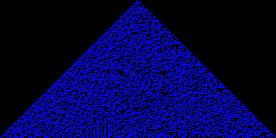
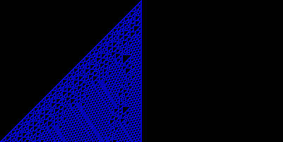

Most of us have probably heard of Conway's Game of Life, but there are other cellular automata that are equally interesting. In fact, there is a group of 256 one-dimensional cellular automata that are quite easy to simulate but still fun to observe.
To simulate these elementary cellular automata, you first need to construct a rule table. This table is a description of the changes that happen in each discreet step of time. Here's the table for the "rule 30" automaton:
+-----------------------------------------------------------------+
| Neighborhood | 111 | 110 | 101 | 100 | 011 | 010 | 001 | 000 |
+-----------------------------------------------------------------+
| New Center Cell | 0 | 0 | 0 | 1 | 1 | 1 | 1 | 0 |
+-----------------------------------------------------------------+
The first row is the same for this whole family of automata. It represents the "neighborhood" of the cell currently being examined, which includes the cell itself and one cell to either side of it. The current values of those cells, ones being on and zeros being off, can be used to determine the new value for this cell in the next discreet step of time.
That new value comes from the bottom row. This row is generated by taking the rule number, 30 in this case, in binary form. 11110 is 30 in binary, so we just pad the left side with zeros and we have our table.
Once you have the rules, you just apply them to a string of cells. For example, given the cells:
11001
The rule 30 table creates:
1101111
Note that cells outside of what I had were off (zeros) for the purposes of calculating neighborhoods.
This week's Ruby Quiz is to write a program that accepts up to three parameters: the rule as an integer in decimal, the number of steps to simulate, and the starting state of the cells as a String of ones and zeros. Here's a sample run of my solution using all three options:
$ ruby cellular_automaton.rb -r 110 -s 20 -c 1
X
XX
XXX
XX X
XXXXX
XX X
XXX XX
XX X XXX
XXXXXXX X
XX XXX
XXX XX X
XX X XXXXX
XXXXX XX X
XX X XXX XX
XXX XXXX X XXX
XX X XX XXXXX X
XXXXXXXX XX XXX
XX XXXX XX X
XXX XX X XXXXX
XX X XXX XXXX X
XXXXX XX XXX X XX
To impress your friends, try adding in support for graphic output in addition to printing to the terminal.


Quiz Summary
I chose this quiz because I felt it was easy and interesting. It seems the jury is still out on the easy aspect though. I believe there were only two correct solution this week. Most of them had problems with at least some rules, including my own code. Let's have a look at what went wrong.
The issue is that any rule which sets the one's bit, creates a case where 000 activates the middle cell. Since all cells not on are off and our area of cells is theoretically infinite in width, that means those rules create long strands of active cells on the very first step.
This is only a problem because many of us tried a shortcut like my own code of:
cells << "00#{cells.last}00".scan(/./).
enum_cons(3).
inject("") { |nc, n| nc + RULE_TABLE[n.join] }
end
However, adding two zeros to either end is not enough to properly display these patterns.
A better approach is to create a viewing window of the cell space large enough to show the interesting parts of the pattern. We will get the idea of the infinite spans when we see the cells running off the edges of such a window.
It was Simon Kröger who pointed out these issues in the discuss and I believe his solution was the first correct submission, so let's take a peek at that code. Here's the setup:
rule, steps, cells = 145, 20, '1'
OptionParser.new do |opts|
opts.on("-r RULE", Integer) {|rule|}
opts.on("-s STEPS", Integer) {|steps|}
opts.on("-c CELLS", String) {|cells|}
end.parse!
# ...
You can see Simon require the OptionParser library here and put it to work. Take a close look at just how the parameters are assigned though, because the code is tricky.
First, some defaults are setup in normal variables. Then the OptionParser code gets run, passing the user's settings into blocks that don't seem to do anything with the values. Note though that those block variables have the same names as the variables where the defaults were placed. In Ruby 1.8.x this will actually change the value of the outer variable.
This is probably a good habit to start breaking now, if you catch yourself using it. A future version of Ruby will change these variable assignment rules and break code like the above.
Now that the variables are assigned, Simon creates the current row of cells:
size = steps + cells.size + steps
line = cells.center(size, '0')
# ...
This is just the starting cells padded with zeros. The key though is the amount of padding. There are only two cases for how the cells grow. We've talked about the infinite growth for rules with the one's bit on already, but all other rules can growth at most one cell in either direction each step. That's the padding Simon adds, step zeros to either side.
Now we are ready for the application code:
steps.times do
puts line.tr('01', ' X')
widened = line[0, 1] + line + line[-1, 1]
line = (0...size).map{|i| rule[widened[i, 3].to_i(2)]}.join
end
This code loops over the requested number of steps. At each step, it prints the current row of cells.
Now the widening step is another clever trick. Remember, we have two growth rates, one cell at a time and infinite growth. In the first case, we will have zeros at both ends and beyond that there should be more zeros. In the latter case, all the cells on the edges will be ones to represent the infinite growth. Beyond those would be more ones. By expanding the grid with what is already on each end, both cases are covered.
The final line of the iterator does the actual change of cells. It walks the widened row, but takes the cells three at a time. This will drop the two extra cells at the end back off and give us the proper row length.
The actual application of the rule is done here with bit indexing. By treating the three cells as a bit pattern and converting them to an Integer, we get the index for the rule that will fetch the proper zero or one for that pattern.
You may want to work through this code with a pencil and paper until it all clicks. I did. There's a lot going on in that tiny bit of code.
My thanks to all of the others who submitted as well. These other solutions were interesting as well, despite my claims that they weren't completely correct. Most of them worked on all of the rules that didn't expand infinitely and that includes the interesting rules. Do browse through those.
Tomorrow we will fiddle with with an Erlang problem I found interesting...